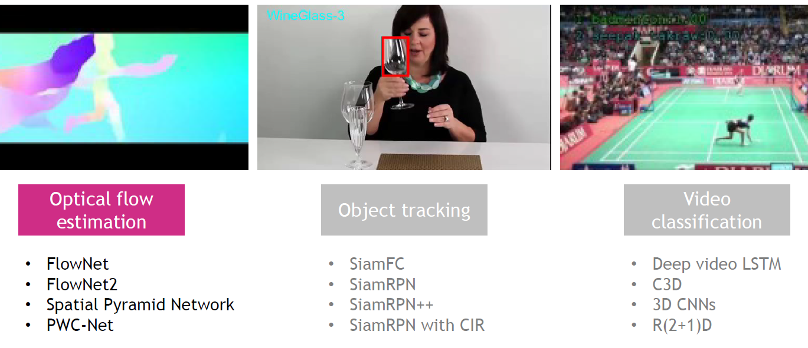
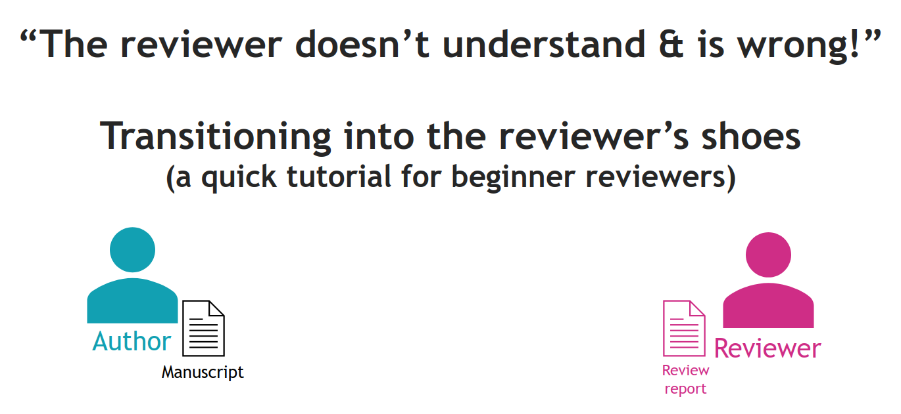

I love supporting the growth of young researchers in computer vision and machine learning. I provided technical presentations on deep learning and computer vision as guest lectures, tutorials on academic and professional skills such as peer review, and supervised PhD and MSc students and research assistants on projects spanning visual affordance segmentation, human-robot interaction, object re-identification, pose estimation, and audio classification.
Technical presentations

Deep learning models for computer vision
An overview of convolutional neural networks and their applications in computer vision tasks,
including image classification, semantic segmentation, object detection,
instance segmentation, visual object tracking, optical flow estimation,
and video classification. Details on architectural design, novel concepts,
advantages and disadvantages. Short overview of vision transformers.
ECS709 - Introduction to Computer Vision (Winter 2022)
Lecturer: Prof. A. Cavallaro
Queen Mary University of London

Local Image Features: From Classical to Deep Learning
Building on interest point detection basics, this lecture covers local image features in depth,
including advanced SIFT-family descriptors, binary descriptors (BRIEF, ORB, BRISK),
and deep learning approaches, both patch-based (TFeat, HardNet) and image-based (SuperPoint, D2-Net),
with their design principles, losses, and architectures.
ECS709 - Introduction to Computer Vision (Winter 2022)
Lecturer: Prof. A. Cavallaro
Queen Mary University of London

How to review scientific papers
A 2-session tutorial for new PhD students or anyone wanting deeper insight
into peer review and how to write high-quality reviews, covering the reviewer's mindset,
structuring constructive feedback, and hands-on practice reviewing two published papers,
with individual feedback on each participant's written reviews.
Seminar for the Centre for Intelligent Sensing (CIS), March-April 2023
Queen Mary University of London
Supervision
- N. Ha, Research Assistant (with Dr. Changjae Oh), Queen Mary University of London, Visual-language models for Object Re-Identification, 2025 LinkedIn
- T. Apicella, PhD student (with Prof. Andrea Cavallaro), Queen Mary University of London, Visual Affordance Segmentation, 2022-2024 Website
- Y. L. Pang, PhD student (with Dr. Changjae Oh and Prof. Andrea Cavallaro), Queen Mary University of London, Safe Human-to-Robot Handovers, 2021-2025 LinkedIn
- X. Weber, MSc student and Research Assistant (with Prof. Andrea Cavallaro), Queen Mary University of London, Object Pose Estimation, 2020-2022 LinkedIn
- S. Donaher, MSc student and Research Assistant (with Prof. Andrea Cavallaro), Queen Mary University of London, Audio Classification, 2022-2021 LinkedIn